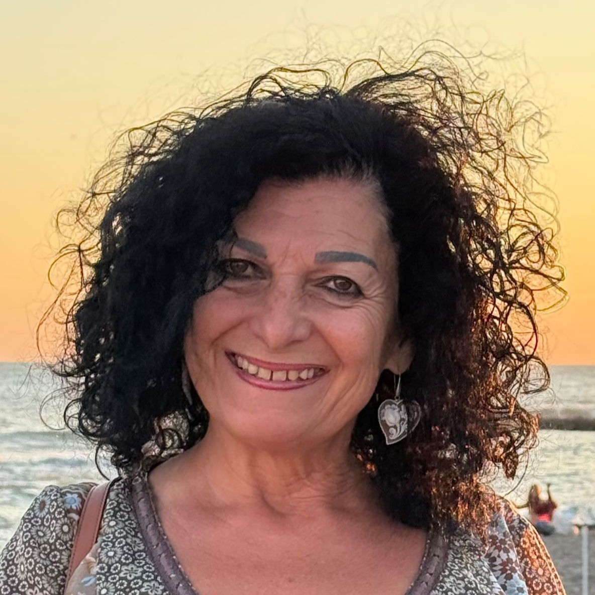
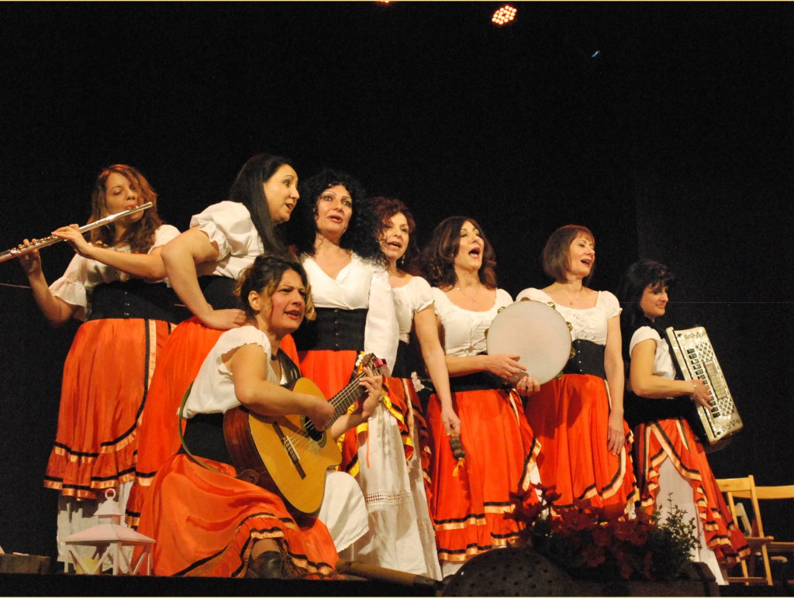

I cedri della Palestina
Una storia di memoria e di esilio, tra Palestina e Italia.
Scrittrice · Artista · Voce
La vita ha
molte voci.
Le parole diventano storie. Il segno diventa immagine. La voce diventa incontro. Un viaggio tra libri, arte e palcoscenico, con le persone al centro.
Entra nel mio mondo
Laila Scorcelletti attraversa la scrittura, la pittura, la musica e il teatro. Autrice di narrativa, poesia e saggistica, porta in ogni linguaggio l’attenzione alle storie delle persone.
Insegnante di scuola primaria e di arte, fondatrice del gruppo artistico Le Maghe e presidente dell’associazione culturale Le Tartarughe, vive la cultura anche come partecipazione: un modo per creare legami, custodire memoria e aprire possibilità.
02 / La biblioteca
La memoria, l’immaginazione, la crescita.
Ogni libro apre una porta diversa.
Una storia di memoria e di esilio, tra Palestina e Italia.
Il viaggio dell’amore, tra racconto, poesia e immagini.
La parola poetica, nella raccolta pubblicata da Fermenti.
Una riflessione sui media, sull’infanzia e sulle relazioni.
Anicia, collana Anicia scuola. 112 pagine.
Scheda bibliografica ↗Presente nel Fondo Maratona d’Autore delle Biblioteche di Roma.
Nel catalogo della biblioteca ↗Un contributo a Quando suona la campanella, raccolta promossa dal CESP e pubblicata da Manifestolibri.
Scopri l’antologia ↗03 / Il segno e il colore
Dalla penna a sfera al vino e al caffè.
La ricerca cambia materia, conserva lo sguardo.
La biro, prima strumento di scrittura, diventa materia del disegno. Intrecci, linee e chiaroscuri costruiscono un immaginario che la porta dalla pagina alle mostre.
La personale al Porto di Ostia ↗Vino e caffè prendono il posto dei colori. Nati nel 2021 ed esposti alla Galleria Ess&erre, questi paesaggi trasformano una materia quotidiana in una tavolozza di memorie.
Il racconto di Marina Sonzini ↗04 / La voce, la scena
Un canto che appartiene alla memoria di tutti. Una scena che prende vita. Con Le Maghe, la tradizione popolare si incontra con il teatro, la danza e il piacere di stare insieme.
Il mondo de Le Maghe
Fondatrice, cantante, autrice
Laila dà voce al repertorio, suona le castagnette e porta nel gruppo la sua esperienza teatrale. Canzoni romane, stornelli e melodie della tradizione italiana diventano occasione di incontro.
Ascolta l’album Magica…Mente a Roma ↗Il teatro che apre strade
Firma testo e regia di Magica…mente a Roma, spettacolo legato a Operazione Carrozzella Romana, la campagna del gruppo per superare le barriere architettoniche. È regista, coreografa e interprete anche di Incantesimo Napulitano.
Il manifesto del progetto ↗05 / Cultura che unisce
La scuola, il territorio, gli spazi condivisi.
Luoghi in cui una storia può diventare di tutti.
Un’associazione culturale, un impegno nel territorio.
Laila è presidente de Le Tartarughe, realtà attiva nella vita culturale del litorale romano. Dalle iniziative legate alla memoria dei luoghi ai progetti di inclusione, l’associazione mette in relazione persone, linguaggi artistici e comunità.
Con il collettivo Subword, di cui Laila fa parte, e la Fondazione Roma Litorale, contribuisce al progetto AniMare: un murale dedicato all’ecosistema marino, accompagnato da video-fiabe.
Scopri AniMareL’esperienza nella scuola primaria prosegue nell’insegnamento dell’italiano e dell’arte. Creatività, pensiero personale e attenzione all’altro accompagnano il suo lavoro educativo.
La scuola ↗Con Fausto Trombetta e Giuseppe D’Aniello forma il Trio Caligari. Il gruppo riceve nel 2025 il premio speciale OFFI per il progetto dedicato al regista Claudio Caligari.
Il racconto di Rai News ↗Artisti in Onda / Il canale YouTube
Laila incontra artisti e autori e dà spazio alle loro voci. Conversazioni sul lavoro creativo, sui percorsi personali e su ciò che muove un’opera.
Guarda le intervisteContinuiamo la conversazione
Per conoscere gli spettacoli e proporre
un’iniziativa con Le Maghe.